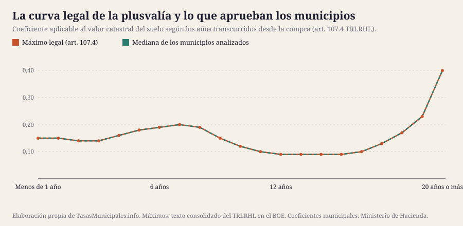

La ley fija unos coeficientes máximos para la plusvalía municipal y deja que cada ayuntamiento baje de ahí. Hemos comprobado cuántos lo hacen: 77 de 127 aplican el tope en los 21 tramos.
Por Aithamy Rivero · Actualizado el 25 de julio de 2026 · Metodología y fuentes
Desde que el Tribunal Constitucional anuló el método de cálculo anterior (sentencia 182/2021) y el Real Decreto-ley 26/2021 lo reformó, la base imponible de la plusvalía municipal por el método objetivo se obtiene multiplicando el valor catastral del suelo por un coeficiente que depende de los años transcurridos. La ley fija unos coeficientes máximos y cada ayuntamiento puede aprobar los suyos por debajo.
La pregunta práctica es: ¿los aplica al máximo? Hemos comparado los coeficientes reales de 127 municipios con los máximos del art. 107.4 del TRLRHL. Resultado: 77 de 127 (60,6%) aplican exactamente los máximos legales en los 21 tramos.
En el tipo de gravamen, el techo legal es el 30% (art. 108.1 TRLRHL). La mediana de los municipios analizados está en el 28% y 49 aplican el 30% máximo. 108 de ellos usan un tipo único para todos los períodos de tenencia, en lugar de escalonarlo.

La forma de la curva legal explica bastante del impuesto. El coeficiente sube hasta el séptimo año, cae en la franja de los 12 a los 16 años —los años del pinchazo inmobiliario, cuando comprar salió caro y vender no dio beneficio— y se dispara a 0,40 en las tenencias de veinte años o más. La mediana de lo que los ayuntamientos tienen aprobado se pega a esa curva casi punto por punto: la política municipal apenas se separa del máximo que le permite la ley.
Un inmueble con un valor catastral del suelo de 30.000 € vendido a los 10 años de haberlo comprado, calculado por el método objetivo con los coeficientes y tipos reales de cada municipio. Los diez más caros y los diez más baratos:
| Municipio | Coeficiente a 10 años | Tipo de gravamen | Cuota |
|---|---|---|---|
| Barbastro | 0,12 | 30% | 1.080 € |
| Alcañiz | 0,12 | 30% | 1.080 € |
| Tarazona | 0,12 | 30% | 1.080 € |
| Langreo | 0,12 | 30% | 1.080 € |
| Mieres | 0,12 | 30% | 1.080 € |
| Siero | 0,12 | 30% | 1.080 € |
| Laredo | 0,12 | 30% | 1.080 € |
| Santoña | 0,12 | 30% | 1.080 € |
| Torrelavega | 0,12 | 30% | 1.080 € |
| Alcázar de San Juan | 0,12 | 30% | 1.080 € |
| Segovia | 0,12 | 15% | 540 € |
| Soria | 0,10 | 18% | 540 € |
| Redondela | 0,12 | 15% | 540 € |
| Gijón | 0,08 | 22% | 528 € |
| Castro-Urdiales | 0,12 | 14,3% | 515 € |
| El Astillero | 0,08 | 21% | 504 € |
| Burgos | 0,08 | 21% | 504 € |
| Castrillón | 0,08 | 20% | 480 € |
| Binéfar | 0,08 | 18% | 432 € |
| Illescas | 0,08 | 17% | 408 € |
Recuerda que puedes elegir el método real (la ganancia efectiva entre escrituras, multiplicada por el peso del suelo en el valor catastral) si sale menor, y que si vendes con pérdidas no hay impuesto. Cómo comparar los dos métodos →
| Tipo de gravamen máximo aplicado | Municipios |
|---|---|
| 30% | 49 |
| 29,88% | 1 |
| 29,8% | 1 |
| 29,62% | 1 |
| 29,37% | 1 |
| 29% | 2 |
| 28,93% | 1 |
| 28,4% | 1 |
| 28,1% | 1 |
| 28% | 8 |
| 27,9% | 1 |
| 27,8% | 1 |
| 27,44% | 1 |
| 27% | 6 |
| 26% | 4 |
| 25,9% | 1 |
| 25,74% | 1 |
| 25% | 16 |
| 23% | 1 |
| 22,7% | 1 |
| 22% | 3 |
| 21,76% | 1 |
| 21,5% | 1 |
| 21% | 6 |
| 20% | 7 |
| 18% | 3 |
| 17% | 2 |
| 16,2% | 1 |
| 15% | 3 |
| 14,3% | 1 |
Cuando un municipio escalona el tipo, suele hacerlo para gravar menos las transmisiones a corto plazo, o al contrario, para penalizarlas. Cuando lo deja plano, el coeficiente es lo único que diferencia una venta rápida de una a veinte años.
La ley permite fijar un tipo distinto para cada tramo de años (art. 108.1 TRLRHL). La mayoría no lo usa: 108 de los 127 municipios aplican el mismo porcentaje a una venta de un año y a una de veinte. Estos son los que sí diferencian, con el recorrido entre su tipo más bajo y el más alto:
| Municipio | Tipo más bajo | Tipo más alto | Recorrido |
|---|---|---|---|
| Monforte de Lemos | 2% | 25% | 23,00 puntos |
| Caravaca de la Cruz | 8% | 30% | 22,00 puntos |
| Mazarrón | 10% | 30% | 20,00 puntos |
| Guadalajara | 18% | 30% | 12,00 puntos |
| Sabiñánigo | 20% | 30% | 10,00 puntos |
| Daimiel | 15% | 25% | 10,00 puntos |
| Plasencia | 20,5% | 27,8% | 7,30 puntos |
| Gijón | 18% | 25% | 7,00 puntos |
| Ferrol | 20% | 26% | 6,00 puntos |
| Calatayud | 23% | 28,1% | 5,10 puntos |
| Don Benito | 25% | 30% | 5,00 puntos |
| Villanueva de la Serena | 25% | 30% | 5,00 puntos |
| Ribeira | 20,5% | 25% | 4,50 puntos |
| Toledo | 25,9% | 29,88% | 3,98 puntos |
| Vilagarcía de Arousa | 22% | 25% | 3,00 puntos |
| Miranda de Ebro | 13% | 15% | 2,00 puntos |
| Cieza | 28% | 30% | 2,00 puntos |
| Lugo | 27% | 28% | 1,00 puntos |
| Ciudad Real | 29,94% | 30% | 0,06 puntos |
Que un ayuntamiento grave más las transmisiones a largo plazo tiene una lógica: el coeficiente ya castiga menos las ventas rápidas desde la reforma de 2021, y escalonar el tipo permite corregirlo. Al revés —tipo alto en el corto plazo— es una medida contra la compraventa especulativa.
Los datos que publicamos son los que el ayuntamiento comunica al Ministerio, y el último ejercicio disponible es 2025. Si necesitas la cifra exacta para una escritura, hay tres sitios donde mirar, en este orden:
Y un detalle que se pasa por alto: los coeficientes máximos del art. 107.4 se actualizan por la Ley de Presupuestos. Si tu ordenanza dice «se aplicarán los máximos legales» en lugar de listar números, los tuyos cambian cuando cambia la ley estatal, sin que el pleno tenga que aprobar nada.
Estos son los topes del art. 107.4 del TRLRHL. Se actualizan por la Ley de Presupuestos, así que conviene comprobar la versión consolidada antes de hacer cuentas.
| Años transcurridos | Coeficiente máximo |
|---|---|
| Menos de 1 año | 0,15 |
| 1 año | 0,15 |
| 2 años | 0,14 |
| 3 años | 0,14 |
| 4 años | 0,16 |
| 5 años | 0,18 |
| 6 años | 0,19 |
| 7 años | 0,20 |
| 8 años | 0,19 |
| 9 años | 0,15 |
| 10 años | 0,12 |
| 11 años | 0,10 |
| 12 años | 0,09 |
| 13 años | 0,09 |
| 14 años | 0,09 |
| 15 años | 0,09 |
| 16 años | 0,10 |
| 17 años | 0,13 |
| 18 años | 0,17 |
| 19 años | 0,23 |
| 20 años o más | 0,40 |
Los coeficientes y tipos reales de cada municipio proceden de la consulta de información impositiva municipal del Ministerio de Hacienda, ejercicio 2025. Los máximos legales, del texto consolidado del TRLRHL en el BOE.
Dos series que hemos descartado. Lena y Verín aparecen en la consulta con coeficientes de entre 0,01 y 0,04, muy por debajo de cualquier máximo legal. Todo apunta a que siguen declarando el porcentaje anual del sistema anterior al RDL 26/2021 en lugar de los coeficientes actuales. Reproducirlos como si fueran coeficientes daría una cuota falsa, así que en sus fichas lo advertimos y remitimos a la ordenanza.
Lo que no cubre este análisis: la consulta del Ministerio no publica los coeficientes de 5 de los 134 municipios de la guía (Fraga, Valdepeñas, Trujillo, Sarria, Viveiro). En sus fichas remitimos al máximo legal y lo advertimos. Tampoco recoge las reducciones potestativas ni las exenciones (herencias entre familiares directos en algunos municipios, dación en pago, transmisiones con pérdidas), que hay que buscar en la ordenanza.
En la ficha de cada municipio publicamos sus 21 coeficientes y su tipo, con un ejemplo de cálculo. Buscar mi municipio →